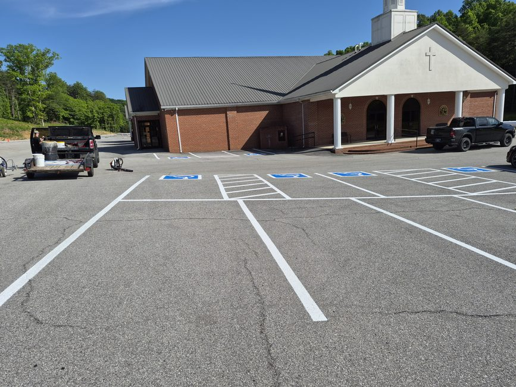
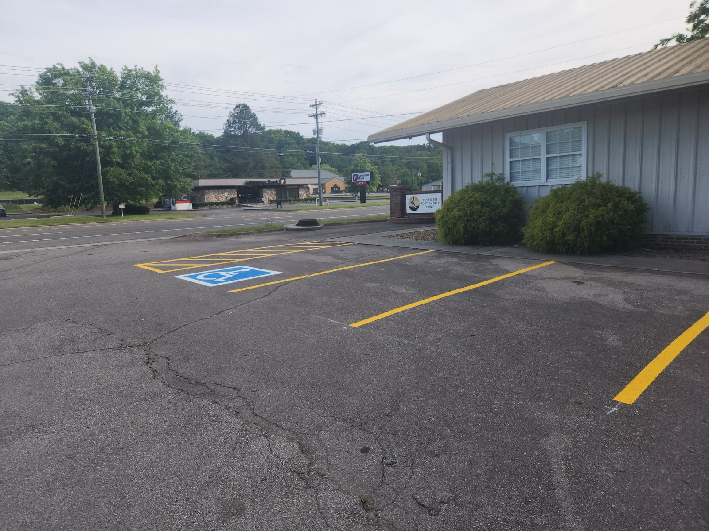
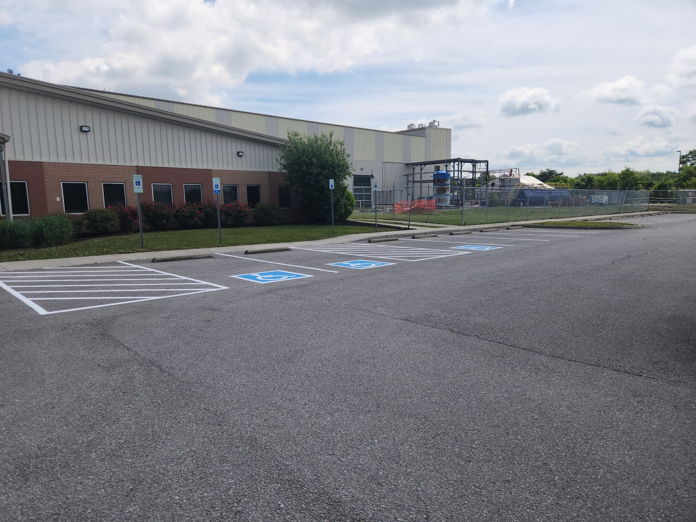

Parking Lot Striping
Fresh stall lines, arrows, fire lanes, loading zones, and full parking lot layouts for businesses of any size.
East Tennessee's Trusted Striping Company
Adams Bros Striping provides high-quality, durable parking lot striping and pavement markings throughout East Tennessee.
About Adams Bros
Owned and operated by Andrew and Bradley Adams, Adams Bros Striping helps businesses, churches, warehouses, offices, and property managers keep their lots safe, organized, and professional.
From fresh layouts to re-striping and ADA markings, every project is completed with attention to detail and long-lasting quality. We use professional-grade equipment and materials to ensure crisp, durable lines every time.
Request a Free Estimate →What We Do
Fresh stall lines, arrows, fire lanes, loading zones, and full parking lot layouts for businesses of any size.
Handicap parking spaces, access aisles, ramps, and compliant pavement markings meeting all federal and state standards.
Refresh faded, worn-out lines and restore a clean, professional look to your existing parking lot or surface.
Interior safety lines, walkways, directional markings, and workflow zones for warehouses and industrial facilities.
Every project is quoted based on lot size, layout, condition, and marking needs. Request a free estimate →
Where We Work
Based in Madisonville, TN, Adams Bros Striping travels throughout East Tennessee to serve businesses, churches, schools, and property managers. Not sure if we cover your area? Call us — we'll let you know.
Before & After
A look at completed projects across East Tennessee.



FAQ
Parking lot striping typically lasts 1–3 years depending on traffic volume, weather exposure, and pavement condition. High-traffic areas may need re-striping annually, while low-traffic lots can go 2–3 years between applications.
Freshly striped sections need to dry for about 30–60 minutes before vehicle traffic. We can work in phases to keep most of your lot accessible, or schedule work during off-hours to minimize disruption to your business.
Yes. All ADA markings we install meet federal and Tennessee state requirements, including proper stall dimensions, access aisles, signage placement guidelines, and van-accessible space requirements.
We serve all of East Tennessee including Knox County (Knoxville), Monroe County (Madisonville), Blount County (Maryville), Loudon County (Lenoir City), McMinn County (Athens), Roane County (Kingston), and surrounding communities. Contact us to confirm your location.
Most parking lot striping jobs are completed in a single day. Smaller lots take 2–4 hours; larger commercial properties or full re-layouts may take a full day. We'll give you a time estimate when we review your lot.
Yes — all estimates are completely free with no obligation. Submit your project details through our quote form or call us at 423-519-2204 and we'll provide a fair, honest quote.
Testimonials
★★★★★“Adams Bros Striping did an outstanding job striping the Cherohala Skyway Visitor Center for us. Not only did they do quality work, but it was affordable as well. Our parking lot now looks great!”
Visit Monroe TN Google Review · 3 months ago
★★★★★“Great work, good price and did what he said he would do.”
Phillip Carroll Google Review · 2 months ago
★★★★★“Andrew did an amazing job on our thrift store parking lot! He was prompt, professional and his price was very reasonable. I would highly recommend Adams Bros Striping!”
Patricia Machado Google Review · Recent
Request a Quote
Submit your project details and Adams Bros Striping will review the request and follow up as soon as possible.